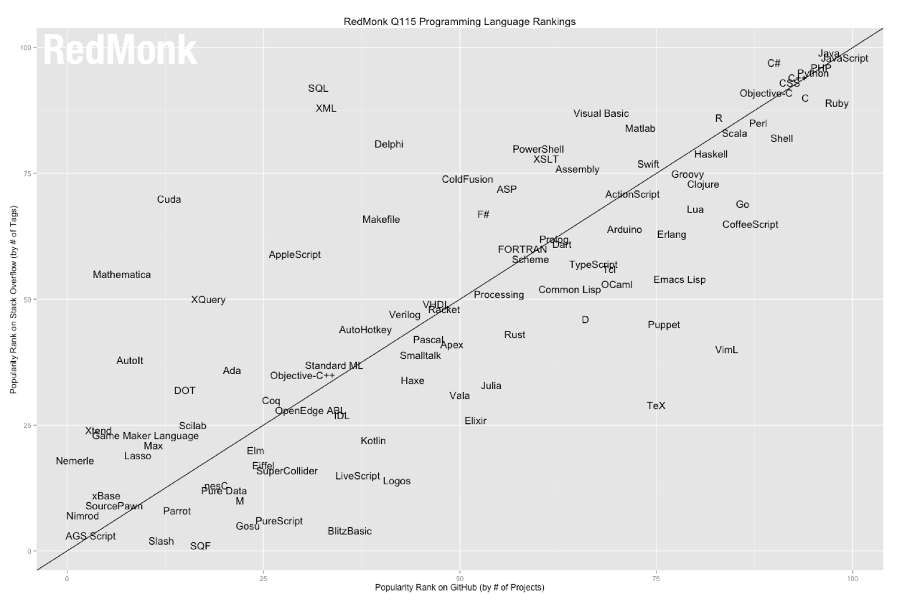
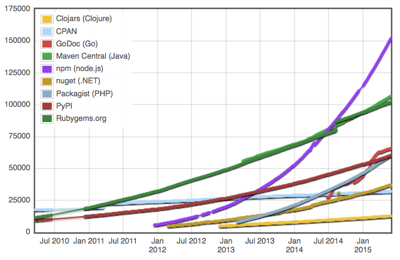

Node.js: Wut?
Rod Vagg
What is Node.js?
A simple platform for writing
… network-centric
… JavaScript applications
… using event-driven, non-blocking I/O
The Essence of Node.js
- JavaScript on the server
- Asynchronous programming
- Module-driven development
- Small core, vibrant ecosystem
JavaScript on the Server
JavaScript on the Server
- Runtime: V8 (Chrome)
- Productive: C-family dynamic language
- Single-threaded (A positive!)
- Approachable, sans quirks
- “Developer joy”
- Massive pool of developers

Network-centric JavaScript
Node core:
- ¼ platform
- ¼ dev support
- ¼ abstractions, OS, libs & filesystem
- ¼ networking
TCP, UDP, HTTP, HTTPS, TLS, URLs, query strings
Asynchronous Programming
Asynchronous Programming
Reactionary: callbacks, events, streams everywhere
JavaScript first-class functions: continuation-passing style
// callbacks
fs.readFile('data.txt', 'utf8', function (err, data) {
var lines = data.split('\n').length
console.log(lines + ' lines')
})
// events
server.on('connection', function (stream) {
console.log('someone connected!')
})
I/O is usually hidden
System.out.println("Reading file...");
BufferedReader br = new BufferedReader(new FileReader("in.txt"));
try {
StringBuilder sb = new StringBuilder();
String line;
while ((line = br.readLine()) != null)
sb.append(line + "\n");
System.out.print(sb.toString());
} finally {
br.close();
}
System.out.println("Finished reading file!");
The programmer isn't prompted to consider the costs
I/O is expensive
| Class | Operation | Time cost |
|---|---|---|
| Memory | L1 cache reference: | 1 ns |
| L2 cache reference: | 4 ns | |
| Main memory reference: | 100 ns | |
| I/O | SSD random-read: | 16,000 ns |
| Round-trip in same datacenter: | 500,000 ns | |
| Physical disk seek: | 4,000,000 ns | |
| Round-trip from AU to US: | 150,000,000 ns |
Event-driven, non-blocking I/O
Scalability: kernel-level non-blocking socket I/O:epoll or select
Concurrent: worker threads for file I/O
JavaScript thread only needs to block for JavaScript!
Unless you tell it otherwise
Event-driven, non-blocking I/O
// Synchronous (we avoid this)
console.log('Reading file...')
var data = fs.readFileSync('data.txt', 'utf8')
var lines = data.split('\n').length
console.log(lines + ' lines')
// Asynchronous (we embrace this)
fs.readFile('data.txt', 'utf8', function (err, data) {
var lines = data.split('\n').length
console.log(lines + ' lines')
})
console.log('Reading file...')
libuv and the event loop
| JavaScript callbacks | ||
| Timers |

|
Sleep? |
| Socket I/O | Filesystem I/O | OS events |
GIF analogy credit: http://nodejsreactions.tumblr.com/post/56979518608/the-node-js-event-loop
Module-driven Development
Module-driven Development
Module system solves most dependency-hell problems
The holy-grail of decoupled and reusable coding
npm - the Node Package Manager

Makes publishing and using packages a breeze
Minimises dependency and version conflicts
Ease and simplicity of reuse has encouraged a culture of extreme modularity

Source modulecounts.com
Module-driven Development
Small chunks of code:
- Focused concerns
- Testable
- Grokkable
- Documentable
- Sharable
- Ease of collaboration
module.exports = function archy (obj, prefix, opts) {
if (prefix === undefined) prefix = '';
if (!opts) opts = {};
var chr = function (s) {
var chars = {
'│' : '|',
'└' : '`',
'├' : '+',
'─' : '-',
'┬' : '-'
};
return opts.unicode === false ? chars[s] : s;
};
if (typeof obj === 'string') obj = { label : obj };
var nodes = obj.nodes || [];
var lines = (obj.label || '').split('\n');
var splitter = '\n' + prefix + (nodes.length ? chr('│') : ' ') + ' ';
return prefix
+ lines.join(splitter) + '\n'
+ nodes.map(function (node, ix) {
var last = ix === nodes.length - 1;
var more = node.nodes && node.nodes.length;
var prefix_ = prefix + (last ? ' ' : chr('│')) + ' ';
return prefix
+ (last ? chr('└') : chr('├')) + chr('─')
+ (more ? chr('┬') : chr('─')) + ' '
+ archy(node, prefix_, opts).slice(prefix.length + 2)
;
}).join('')
;
};
https://github.com/substack/node-archy (download rank: 174)
Small Core, Vibrant Ecosystem
Small Core, Vibrant Ecosystem
Node's core contains mostly essentials
Constant debate about what gets in
"The standard library is where modules go to die."
—Kenneth Reitz
| JavaScript | Node core library | ||||
| C / C++ | Node bindings | ||||
| V8 | libuv |
OpenSSL zlib http_parser cares |
|||
Original version of this table by Bert Belder: http://www.youtube.com/watch?v=nGn60vDSxQ4
Small Core, Vibrant Ecosystem
npm & Node's modularity enables a vibrant ecosystem
Experimentation pushed to the edges
Small Core, Vibrant Ecosystem
Experimentation!
- Build tools: Grunt, Gulp, etc.
- Browser tools: Browserify, WebPack
- Level*
- StackGL, etc.
- Desktop application tooling: NW.js, Atom (Electron)
- IoT & robotics
- Languages & language features